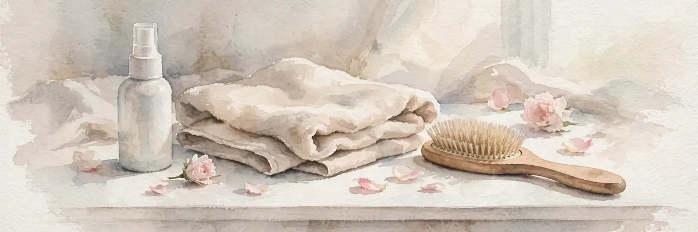

トップ ＞ ヘアケア ＞ ドライシャンプーの表示の読み方と、使う場面の段取り
ドライシャンプーの表示の読み方と、使う場面の段取り

ドライシャンプーは、水を使わずに髪や頭皮を整えるアイテムです。洗髪できない日や、旅行先、運動のあとなどに使う方もいます。施術の現場でも、「ドライシャンプーって、どう使うのがいいの」と聞かれることがあります。この記事では、ドライシャンプーの表示の読み方と、使う場面の段取りを整理します。特定の商品の話ではなく、ドライシャンプーという形のアイテムの使い方の考え方です。
タイプ別の表示の見方
ドライシャンプーには、スプレー、パウダー、シートの3つのタイプがあります。スプレータイプは、頭皮に向けて吹きかけ、パウダータイプは、粉を頭皮になじませ、シートタイプは、髪や頭皮をふき取ります。パッケージには「水のいらないシャンプー」「洗い流さない」といった案内が書かれていることが多いです。シートタイプは、1枚ずつ取り出して使うので、使う枚数の目安も表示で確認しておきます。
まず確認したいのは、使う場所の表示です。「頭皮用」「髪用」といった用途の表示が書かれていることがあります。頭皮用は地肌に向けて使い、髪用は髪の毛になじませる設計になっていることが多いです。用途に合った使い方をするのが基本です。
また、「頭皮に異常があるときは使用しないでください」といった注意書きも、表示で確認しておきたい点です。頭皮にかゆみや赤みがあるときは、使わない判断をします。香りの強さも、商品ごとに違うので、使う前に表示や香りの案内を確認しておきます。
使う量と使い方の段取り
使うときの段取りは、「適量を地肌に向ける、なじませる、ブラシで落とす」の3つです。スプレータイプは、頭皮から少し離して吹きかけます。近づけすぎると、一か所に集中してしまうので、表示の距離を守ります。パウダータイプは、手のひらに出してから、指先で頭皮になじませます。
なじませたあとは、ブラシや手ぐしで、髪全体をとかします。余分な粉や、浮いた汚れを落とすためです。ブラシは、目の粗いものを使うと、髪が引っかかりにくくなります。仕上げに、タオルで軽く押さえると、粉の残りが少なくなります。
使う頻度は、洗髪の代わりとして毎日使うものではなく、洗えない日のつなぎとして考えるのが無駄のない使い方です。表示に「1日の使用回数」といった案内がある場合は、それに従います。何日も続けて使うのではなく、洗える日には洗う、という段取りにしておきます。使う量が多すぎると、粉が白く残ったり、香りが強く残ったりします。はじめて使うときは、少なめから試して、足りなければ少しずつ足すのが無駄のない使い方です。
使った日の洗い方と保管
ドライシャンプーを使った日は、その日の夜に、普段通りの洗髪をするのが基本です。シャンプーの前に、お湯で髪全体をしっかり予洗いして、粉やスプレーの残りを流してから洗います。予洗いを丁寧にすると、シャンプーの泡立ちもよくなります。
保管は、直射日光の当たらない涼しい場所が基本です。スプレータイプは、火気の近くに置かない、という注意書きがある場合があります。高温になる場所には置かず、キャップを閉めて立てて保管します。
旅行などで持ち運ぶ場合は、スプレータイプはキャップを確認し、パウダータイプはフタが閉まっているかを確認して、液漏れや粉漏れしないようにポーチに入れておくと安心です。頭皮に合わない感じがしたときは、使用をいったんやめて、気になる場合は皮膚科などの専門家に相談してください。この記事はドライシャンプーの使い方の案内であり、商品ごとに表示がある場合は、そちらが優先です。
セラフィナ「ドライシャンプーは洗えない日のつなぎ。使いすぎず、その日の夜はちゃんと洗うのが段取りだよ」

セラフィナ｜美容の道具箱の案内役
「量と表示が分かれば、美容は失敗しない。」——セラフィナと白猫のモコが、買う前のチェックポイントを案内します。綺麗になりたい気持ちに正直に、でも表示は冷静に読むのが、このサイトの約束です。